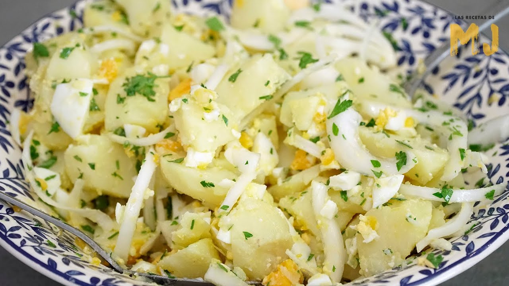

Papas Aliñás

Description.
Papas Aliñás de Cádiz. Hoy una receta típica del verano, las papas aliñás (patatas aliñadas), que no puede faltar en ninguna cocina de Cádiz.
Esta es una receta fácil de verdad pero hay que tener en cuenta algunas cosas para que sea todo un éxito. Lo más importante es que los ingredientes sean de la máxima calidad, ya que al no llevar ninguna salsa que enmascare el sabor la calidad de los ingredientes se hará notar en nuestras papas aliñás.
Ingredients:
- 700 gramos de patatas nuevas de tamaño mediano
- 120 gramos de cebolleta (o de cebolla bien blanca y fresca)
- 1,5 litros de agua
- 1 cuchara colmada (bien llena) con perejil fresco picado (son unos 4 gramos y no vale perejil seco)
- 150 ml de aceite de oliva suave
- 2 cucharadas de vinagre de jerez (u otro vinagre de calidad)
- Sal gruesa (1 cucharada para cocer las patatas y media cucharada pequeña para aliñar)
- Opcional: 1 huevo cocido, 1 lata de atún en aceite y unas aceitunas sin hueso.
Steps:
- Coge las patatas y lávalas bien bajo el grifo.
- Pon en una olla las patatas y cúbrelas con el agua. Pon a calentar y cuando hierva el agua añade la cucharada de sal gruesa.
- Contamos 25 minutos desde que empieza a hervir el agua pero ten en cuenta que si las patatas son muy pequeñas estarán antes y si son grandes tardarán más. Lo suyo es que a los 25 minutos saques una patata con una cuchara y le metas un palillo. Si el palillo atraviesa con facilidad la patata es que está bien cocida.
- Mientras se cuecen las patas podemos picar finamente la cebolleta (o la cebolla). También podemos picar el perejil más o menos fino (a vuestro gusto).
- Cuando las patatas estén bien cocidas apagamos el fuego y apartamos la olla del fuego. Dejamos las patatas dentro del agua (recuerda, fuera del fuego) durante 30 minutos y luego las sacamos y las dejamos en un escurridor hasta que estén templadas (aproximadamente 20-30 minutos).
- Cuando puedas coger las patatas con las manos sin quemarte (pero aún algo calientes) pélalas. Córtalas en rodajas y ponlas en una fuente de cerámica o cristal (no de metal).
- Añade a las patatas la cebolleta y el perejil picado. Reparte bien la media cucharada pequeña con sal gruesa por encima de todo y luego añade el vinagre y por último el aceite de oliva. Mezcla todo bien y cuando las patatas estén frías (sin pasar por el frigorífico) están listas para servir.
- Como variante de las papas aliñás de Cádiz (que en la receta típica solo lleva los ingredientes que hemos usado) puedes añadirle lo que tu prefieras. Yo te recomiendo añadir al final del todo una lata de atún en aceite (escurre bien el aceite ya que no suele ser de buena calidad), un huevo duro cortado a rodajas o picado y un puñado de aceitunas sin hueso. Fuera de la cocina y a comer!!!